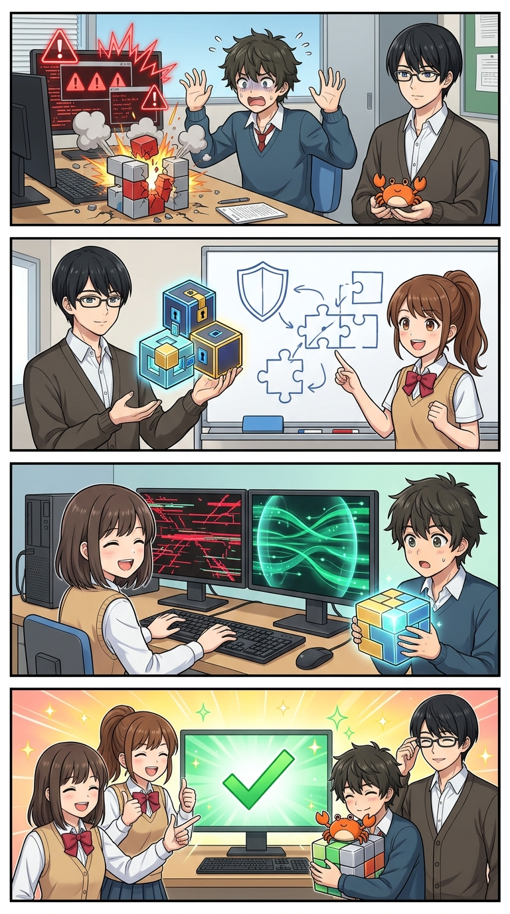
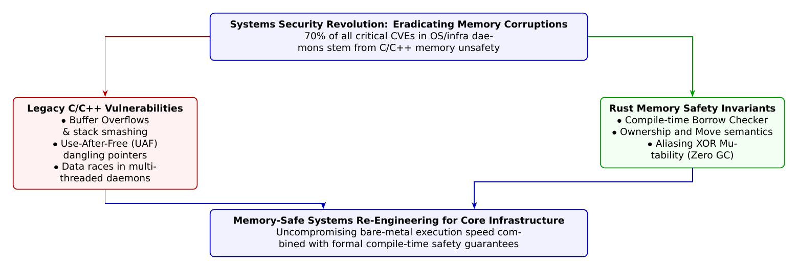

🎨 4コマ漫画挿絵（文字なし）
AI高解像度生成
▲ 【挿絵】青葉台高校 情報科学部＆帝都科学大学サイバーディフェンス・ラボでの実践シーン
💬 4コマ漫画キャラクターセリフ (Story Dialogue Script)
日・英バイリンガル (JA / EN)[葵]「何十年も世界中で使われてる基本ソフトなのに、なんでそんな初歩的なミスで壊れちゃうの！？」
[Aoi] "It's standard infra software running for decades—why does it keep dying from such primitive bugs!?"
[結衣]「悪意ある攻撃者は、メモリの境界破壊を突いて制御フロー（RIPレジスタ）を乗っ取り、任意のコードを実行します！」
[Yui] "Adversaries hijack control flows via memory corruption to achieve remote arbitrary code execution!"
[蓮]「危険なポインタの重複や解放漏れは、すべてコンパイラがビルド時にエラーとして弾き飛ばしてくれるんだね！」
[Ren] "Aliasing and dangling pointers are eradicated at compile-time by the relentless borrow checker!"
[全員]「メモリ安全の革命が、インターネットの土台を永久に揺るぎないものにする！」
[All] "The memory safety revolution builds an unshakeable bedrock for tomorrow's internet!"
📖 小説本文
冬晴れの放課後、青葉台高校の情報科学部室。突然、ラックマウントサーバの空冷ファンが唸りを上げ、コンソール画面に不吉な赤い文字列が吐き出された。
```text [18492.312] segfault at 00007ffe34a21000 rip 000055c192a8b340 error 4 in in-router-daemon Segmentation fault (core dumped) ```
「うわああああっ！ また落ちた！」
神崎蓮が頭を抱えてキーボードに突っ伏した。 「部内のネットワーク中継用に使っていた自作ルーターのパケットフォワーディング・デーモンが、突然のセグフォで即死しました……！ GDBでスタックトレースを追ってみたら、受信パケットのパース処理でバッファ境界を踏み越えるバッファオーバーフローと、すでに解放された構造体ポインタを参照するUse-After-Free（解放後メモリ使用）の複合バグです……」
「ええっ、また！？」橘葵が目を丸くした。「蓮くん、先週も3日徹夜してそのC言語のコードのバグを全部直したって言ってなかった？」
「直したはずだったんです……」蓮が情けなさそうに項垂れる。「でも、マルチスレッドで非同期にパケットが飛んでくると、どのスレッドがいつメモリを `free()` したかの同期が狂って……もうポインタの迷宮に閉じ込められた気分ですよ」
「蓮くん、自分を責める必要は全くないよ」
部室に入ってきた城崎悠真が、あたたかい緑茶のペットボトルを蓮の机に置きながら笑った。 「それは君の腕が未熟だからじゃない。**『CやC++で書かれたプログラムにおいて、人間がメモリ管理のバグを完全に排除することは原理的に不可能である』**というのが、現代のコンピュータサイエンスが到達した残酷な結論なんだ」
白石結衣がノートPCの画面にグラフを提示した。 「Microsoftのセキュリティレスポンスセンター（MSRC）やGoogleのChromiumプロジェクト、そして米国のCISA（サイバーセキュリティ・インフラセキュリティ庁）が公表した調査データによると、**過去数十年間に発見されたすべての深刻な脆弱性（CVE）の約70%が、メモリ安全性（Memory Safety）に起因するバグ**で占められています」
「70%も！？」葵が息を呑んだ。「OSのカーネルもルーターも、そんな爆弾を抱えたまま世界中で動いてるの？」
「そうなんだ」悠真が頷いた。「だからこそ、横浜国立大学SPIRAL（吉岡克成教授ら）のシステムセキュリティ研究をはじめ、世界中のセキュリティ機関が国策として推進しているのが、**『メモリ安全な言語――Rustによる重要インフラソフトウェアの再構築（Memory-Safe Re-Engineering）』**なんだ」
---
📊 セキュリティ構造図解 (TikZ LuaLaTeX生成)
国家安全基準・工学図解
▲ 【技術構造図】IPAデジタルスキル標準・国際規格に準拠した仕組みのモデル化